의공산업기사 (2009-05-10 기출문제)
1과목: 기초의학 및 의공학
1. 다음 중 심장의 전기전도의 순서를 바르게 나타낸 것은?
- AV노드 → SA노드 → Purkinje섬유 → 히스번들
- SA노드 → AV노드 → Purkinje섬유 → 히스번들
- SA노드 → AV노드 → 히스번들 → Purkinje섬유
- SA노드 → 히스번들 → AV노드→ Purkinje섬유
(정답률: 85%)

2. 근육의 현미경적 소견을 볼 수 있는 구조물 중 근육이 수축하면 좁아지는 부위는?
- Z line
- A band
- H zone+I zone
- M line
(정답률: 90%)
3. 다음 중 신장의 기능적이고 구조적인 단위는?
- 네프론(nephron)
- 뉴론(neuron)
- 오스테온(osteon)
- 사구체(glomerulas)
(정답률: 91%)
4. 일회용 금속판 전극의 사용방법으로 옳지 않은 것은?
- 전극 부착면을 깨끗이 한다.
- 전해질 모두 마른 후에 전극을 붙인다.
- 전극과 피부간의 움직임이 없도록 부착한다.
- 전극의 전해질 보호 필름을 제거하고 부착한다.
(정답률: 96%)
5. 다음 중 전해질 겔(electrolyte gel)을 사용하지 않는 전극은?
- 건성 전극(dry electrode)
- 부유 전극(floating electrode)
- 금속판 표면 전극(metal-plate electrode)
- 일회용 금속판 전극(disposable electrode)
(정답률: 89%)
6. 신경전달 물질인 아세틸콜린에 대한 설명으로 옳지 않은 것은?
- 알레르기와 염증 반응의 매개체이면서 위산 생성의 자극제 그리고 뇌의 여러 부분에서 신경전달물질로 작용한다.
- 아세틸콜린은 아세틸 CoA로부터 합성된다.
- 아세틸콜린을 분비하는 뉴런을 콜린성 뉴런이라 한다.
- 아세틸콜린에 결합하는 수용체를 콜린성 수용체라 한다.
(정답률: 86%)
7. 다음 중 뒤뇌(후뇌)에 속하지 않는 구조물은?
- 소뇌(cerebellum)
- 다리뇌(pons)
- 시상하부(hypothalamus)
- 벌레(vermis)
(정답률: 87%)
8. 심전도의 발생 원리에 대한 설명 중 옳은 것은?
- 주로 동방결절의 탈분극과 재분극이 그래프를 생성해 낸다.
- 심방과 심실의 기계적인 이완과 수축이 그래프에 가중되어 나타난다.
- 심장의 동방결절에서 나오는 활동전위만을 전기신호로 바꾸어 준 것이다.
- 전기적 자극에 의해 발생, 전파되는 전기적 활동은 신호가 미약하여 심전도에서 검출되지 않는다.
(정답률: 76%)
9. 세포외에 K+ 많아지는 과칼륨혈증(HyperKalemia)상태가 되면 탈분극이 지연되는 현상이 생긴다. 탈분극이 지연된다는 것을 심전도 소견과 비교한 것 중 옳은 것은?
- QRS 파가 넓어진다.
- QRS 파는 높아진다.
- T 파는 낮아진다.
- U 파는 생긴다.
(정답률: 91%)
10. 다음 ( ) 안에 알맞은 말은?
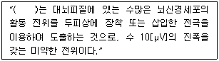
- 근전도(electromyogram, EMG)
- 유발전위(evoked Potential, EP)
- 심전도(electrocardiogram, ECG)
- 뇌전도(electroencephalogram, EEG)
(정답률: 94%)
11. 평행판 모양의 용량성 센서에서 정전 용량을 변화 시킬 수 있는 방법이 아닌 것은?
- 판의 유효 넓이
- 판 사이의 간격
- 유전체
- 전하량
(정답률: 88%)
12. 다음 중 생체표면전극에 대한 설명으로 옳지 않은 것은?
- 전극의 금속에서 발생하는 분극전압이 작아야 한다.
- 오랫동안 안정적으로 체표면과의 접촉을 유지하여야 한다.
- 피부와의 접촉 임피던스를 줄이기 위하여 페이스트(paste)를 사용한다.
- 접촉저항은 면적에 비례하기 때문에, 실제 표면에 접촉하는 면적을 줄여야 한다.
(정답률: 85%)
13. 다음 중 단백질, 탄수화물, 지방을 소화시키기 위한 효소들을 포함하고 있는 기관은?
- 비장
- 간
- 췌장
- 위
(정답률: 90%)
14. 광센서를 이용하여 심박수를 검출할 수 있는 방법은?
- ECG
- EMG
- PPG
- EOG
(정답률: 91%)
15. 직육면체의 금속에 열을 가하고 길이의 변화에 따른 저항을 측정하였다. 열에 의해 금속의 길이는 20% 늘어났고, 면적은 10% 증가했다. 저항계속가 열에 의해 10% 증가했다면 총 저항의 변화율은 얼마인가?
- 10% 감소
- 10% 증가
- 20% 감소
- 20% 증가
(정답률: 94%)
16. 생체에서 전기와 도체 내에서의 전기현상에 대한 설명으로 옳지 않은 것은?
- 생체 내에서 전기는 이온들의 움직임으로 나타난다.
- 분극 전극으로 Agcl 이 있으며, 생체와 전극 사이에 항상 일정한 전압이 형성된다.
- 도체에서는 전자들의 이동에 의해서만 전류가 형성되므로 도체와 생체 사이에 전류를 흘려주기 의해서는 전극(electrode)이 필요하다.
- Agcl 전극은 Ag 전극에 Agcl의 엷은 막이 형성된 것으로 전류가 흘러들어오면 침전된 Agcl에서 Cl-이온이 분리되고 반대로 전류가 흘러나가면 Cl-이온이 Ag와 반응하여 Agcl침전물을 형성한다.
(정답률: 65%)
17. 압전소자에 전압을 가하면 변형이 생기는 현상을 이용한 장치가 아닌 것은?
- 초음파 쇄석기
- 진단용 초음파 영상기기
- 도플러 혈류측정기
- 심음도 측정장치
(정답률: 66%)
18. 다음 중 압전 소자에 대한 설명으로 옳지 않은 것은?
- 전압을 가하면 변형이 생기는 소자
- 물리적 압력이 가해지면 전위가 발생하는 소자
- 전위로부터 변위나 압력변화를 측정할 수 있는 소자
- 서로 다른 두 금속의 접합부로 이루어져 있으며 양단의 온도차에 의해 기전력이 발생하는 소자
(정답률: 88%)
19. 신경전달 물질 중 대표적인 흥분성 신경전달 물질이 아닌 것은?
- 가바(GABA)
- 도파민(DOPAMIN)
- 에피네프린(EPINEPHRINE)
- 아세틸콜린(ACETYLCHOLINE)
(정답률: 96%)
20. 많은 사람의 단시간 심전도 측정에서 가슴에 부착하여 사용하는 전극은?
- 미세전극(micro electrode)
- 흡착전극(suction electrode)
- 감홍전극(calomel electrode)
- 일회용 금속판 전극(disposable electrode)
(정답률: 84%)
2과목: 의용전자공학
21. 생체계측기기의 정적 특성 중 심전도 전극에서의 직류 오프셋 전압의 변동 현상을 반영하는 것은?
- 영점표류(zero drift)
- 정적감도(sensitivity)
- 감도표류(sensitivity drift)
- 입력임피던스(input impedance)
(정답률: 73%)
22. 하나의 CPU에 여러 개의 주변장치가 연결되었을 때 주변 장치가 자기의 상황에 따라 긴급 서비스 요청을 하는 것을 무엇이라 하는가?
- Spooling
- interrupt
- Polling
- searching
(정답률: 79%)
23. 진공 중에 Q1[C], Q2[C]의 전하가 거리 r[m] 떨어져 있을 때 두 전하 사이에 작용하는 힘 F[N] 는?
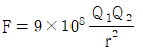
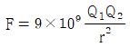
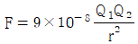
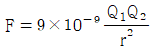
(정답률: 70%)
24. 다음 펄스 변조 방식 중 아날로그 변조(연속레벨변조)방식이 아닌 것은?
- PNM(pulse number modulation)
- PPM(pulse position modualton)
- PFM(pulse Frequence modulation)
- PAM(pulse amplitude modulation)
(정답률: 70%)
25. 일반 매질내 균등 자계에서의 자속 밀도(Wb/m2)는?
- μom
- μrm
- μoH
- μoμrH
(정답률: 83%)
26. 다음 중 생체현상의 특수성에 대한 설명으로 옳지 않은 것은?
- 일과성의 것이 적고, 재현성이 뛰어나다.
- 생체신호는 미약하고, 일반적으로 S/N 비가 작다.
- 개체의 차가 크며 개체 내에서는 항상성이 유지되어 있다.
- 생체는 어느 부분에 대한 특정신호를 순수한 형으로 끄집어내기가 곤란하다.
(정답률: 75%)
27. 심장의 심실이완기 초기에 나는 심음으로 반월판막이 닫힐 때 나는 심음은?
- 제1심음
- 제2심음
- 제3심음
- 제4심음
(정답률: 93%)
28. 2분 동안에 720[J]의 일을 하였을 때 소비전력[W]은?
- 3[W]
- 4[W]
- 5[W]
- 6[W]
(정답률: 93%)
29. 다음 중 정류기(rectifier)에 대한 설명으로 옳은 것은?
- 입력전압과 기준전압을 비교하는 회로
- 신호의 한 시점에 대한 순간적인 변화율을 계산하는 회로
- 출력전압을 디지털 변환 레벨과 같이 정해진 값으로 고정하는 회로
- 양방향으로 변화하는 교류전류를 한 방향만 가지는 직류전류로 변환하는 회로
(정답률: 85%)
30. 전자유량계의 원리는 다음 중 어떠한 법칙에 근거한 것인가?
- 렌쯔의 법칙
- 패러데이의 전자유도 법칙
- 플레밍의 왼손 법칙
- 비오사바르의 법칙
(정답률: 91%)
31. 다음 중 생체신호 측정시 고려사항이 아닌 것은?
- 측정신호시 잡음은 문제가 되지 않는다.
- 인체에 주는 피해를 최소화 하도록 한다.
- 계측은 온도, 소음 등 계측에 필요한 환경을 유지한다.
- 정확한 센서 부착위치와 계측 조작방법을 습득해야 한다.
(정답률: 89%)
32. 다음 회로의 기능은?
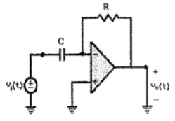
- 미분기
- 적분기
- 비교기
- 가산기
(정답률: 95%)
33. 전력이득 26[dB]인 증폭기 입력신호의 전력이 1[mW]이면 출력신호의 전력은 약 몇 [mW]인가?
- 26
- 260
- 400
- 800
(정답률: 69%)
34. 다음 R-L 직렬회로에서 스위치 S를 닫았을 때, 회로에 흐르는 전류 i(t)[A]는 얼마인가?
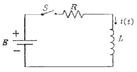
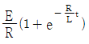
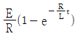
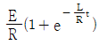
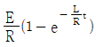
(정답률: 69%)
35. 다음 중 플립플롭에 해당되는 회로는?
- 쌍안정 멀티바이브레이터
- 단안정 멀티바이브레이터
- 무안정 멀티바이브레이터
- 시미트 트리거
(정답률: 85%)
36. 다음 중 데이터 분배 회로에 사용되는 것은?
- 인코더(encoder)
- 멀티플렉서(multiplexer)
- 디멀티플렉서(demultiplexer)
- 시프트 레지스터(shift register)
(정답률: 71%)
37. 마이크로컴퓨터의 입·출력부 구성요소가 아닌 것은?
- 인터페이스 회로
- 입출력 제어회로
- 채널
- 데이터전송회로
(정답률: 82%)
38. 만일 P형 반도체를 만들고 싶으면 다음 중 어느 것을 사용하여야 하는가?
- 억셉터
- 도너
- 5가 불순물
- 실리콘
(정답률: 82%)
39. 다음 중 호흡기의 기능평가법에서 평가기능이 아닌 것은?
- 환기능
- 분포능
- 확산능
- 피폭능
(정답률: 94%)
40. 다음 중 입력된 2진 신호를 이에 상응하는 10진 신호로 변환하는 회로는?
- 인코더
- 디코더
- 카운터
- 멀티플렉서
(정답률: 71%)
3과목: 의료안전ㆍ법규 및 정보
41. PACS의 임상적 파급 효과와 거리가 먼 것은?
- 실시간 판독 가능성
- 지역 연계의 불필요성
- 방사선과 진료의 지역 분산화
- 자동화에 의한 진료 능률 향상
(정답률: 74%)
42. 다음 중 의료기관 만으로 구성된 것은?
- 보건소, 접골원, 치과병원
- 보건소, 요양병원, 산후조리원
- 치과병원, 보건소, 요양병원
- 종합병원, 치과병원, 요양병원
(정답률: 91%)
43. 의료기기 기술문서 등 심사의로서의 첨부자료가 아닌 것은?
- 전자파장해에 관한 자료
- 생물학적 안전에 관한 자료
- 전기, 기계적 안전에 관한 자료
- 물리, 화학적 안전에 관한 자료
(정답률: 81%)
44. 개인 진료기록들이 모두 디지털화되어 안전하게 보관되고 네트워크를 통해 전달될 수 있다면 어느 병원을 방문하더라도 의료진이 원하는 시점에 진료에 필요한 정보를 활용할 수 있으므로 보다 정확하고 안전한 의료서비스를 가능하게 하는 것은?
- EHR
- EMR
- PHR
- CIDO
(정답률: 82%)
45. 다음( ) 안에 들어갈 내용으로 옳은 것은?
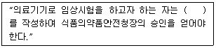
- 임상시험계획서
- 임상시험심사의뢰서
- 임상시험예정신청서
- 임상시험실시기관지정신청서
(정답률: 96%)
46. 다음 접지공사의 종류 중 제1종 접지공사의 접지저항은 몇 [Ω] 이하인가?
- 0.1[Ω]
- 1[Ω]
- 10[Ω]
- 100[Ω]
(정답률: 83%)
47. 다음은 정보보안의 속성에 관한 설명이다. ( )안에 알맞은 것은?
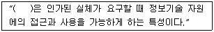
- 무결성
- 가용성
- 기밀성
- 편의성
(정답률: 83%)
48. 제품의 안전성이나 유효성에 영향을 미치는 주요한 사항에 대하여 변경이 있는 때에 추가로 첨부해야 하는 것은?
- 기술문서, 시험검사성적서
- 변경요구서, 시험검사성적서
- 기술문서, 시험검사계획서
- 변경요구서, 시험검사계획서
(정답률: 83%)
49. 다음 중 혈액전염병 및 뇌막염의 진단, 치료, 조언 시스템을 위해 만들어진 의료 전문가 시스템 응용분야의 명칭은?
- MYCIN
- EXPERT
- PROSPECTOR
- CENTAUR
(정답률: 86%)
50. 다음 중 의료가스가 사용되는 용도가 다른 것은?
- 구급용
- 마취용
- 인공호출용
- 특수용접용
(정답률: 89%)
51. 의료법상 종합병원에 설치해야 할 일반적인 필수과목으로만 짝지어진 것은? (단, 병상수에 따른 예외는 제외한다)
- 소아과, 치과, 간호과
- 산부인과
- 진단방사선과, 내과, 정형외과
- 영상의학과, 산부인과, 내과
(정답률: 65%)
52. 다음 중 병원정보시스템(HIS)에 속하지 않는 것은?
- MIS(경영정보시스템)
- OCS(처방전달시스템)
- PACS(의료영상시스템)
- OA(사무자동화시스템)
(정답률: 83%)
53. 의료기기위원회에 대한 내용 중 옳지 않은 것은?
- 의료기기의 기준규격에 관한 사항을 조사, 심의
- 추적관리대상 의료기기에 관한 사항을 조사, 심의
- 의료기기의 등급분류 및 지정에 관한 사항을 조사, 심의
- 의료기기 위원회의 구성 및 운영 등에 관하여 필요한 사항은 식품의약품안전청장령으로 정한다.
(정답률: 67%)
54. 다음 중 데이터베이스 관리자(DBA)의 역할과 관련이 가장 먼 것은?
- 데이터베이스 설계 및 운영
- 데이터베이스 응용 프로그램 개발
- 데이터베이스 시스템 감시 및 성능분석
- 데이터베이스 백업 및 회복의 절차 수립
(정답률: 86%)
55. 점막에 접촉하고 접촉시간이 24시간 미만인 의료기기의 제품에 대하여 ISO 규격에서 지정한 생물학적 안전성 시험평가 항목이 아닌 것은?
- 세포독성시험
- 감작성시험
- 이식시험
- 자극성시험
(정답률: 83%)
56. 다음 중 누설전류의 종류가 아닌 것은?
- 접지누설전류
- 방사선누설전류
- 환자누설전류
- 외장누설전류
(정답률: 94%)
57. 다음 ( )안에 알맞은 것은?
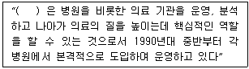
- 병원정보시스템
- 전문가시스템
- 사무자동화시스템
- 원격의료시스템
(정답률: 93%)
58. 다음 중 진단용 방사선 발생장치에 해당되지 않는 것은?
- 유방 촬영용 장치
- 진단용 엑스선 장치
- 자기공명 영상 장치
- 전산화 단층 촬영 장치
(정답률: 88%)
59. 다음 혈압 검사 또는 맥파 검사용 기기의 품목 중 등급이 다른 것은?
- 맥파계
- 안저혈압계
- 혈압감시기
- 수은주식혈압계
(정답률: 91%)
60. 다음 중 등전위 접지를 할 필요가 없는 것은?
- 흉부수술실
- 심형관엑스선 촬영실
- 집중치료실
- 내과외래
(정답률: 85%)
4과목: 의료기기
61. 다음 중 일반적인 초음파의 전파 속도가 큰 순으로 옳은 것은?
- 뼈 ＞ 공기 ＞ 혈액
- 혈액 ＞ 공기 ＞ 뼈
- 공기 ＞ 혈액 ＞ 뼈
- 뼈 ＞ 혈액 ＞ 공기
(정답률: 74%)
62. 선형가속장치(Linac)에서 일반적으로 치료용으로 사용되는 X선 에너지의 범위는?
- 4 ~ 15MV
- 20 ~ 40MV
- 100 ~ 200MV
- 500 ~ 800MV
(정답률: 70%)
63. 다음 중 심박출량의 정의로 알맞은 것은?
- 심장 박동 1회 당 심장에서 대동맥으로 밀어내는 혈류량
- 심장 박동 1분 당 심장에서 대동맥으로 밀어내는 혈류량
- 심장 박동 1시간 당 심장에서 대동맥으로 밀어내는 혈류량
- 심장 박동 1일 당 심장에서 대동맥으로 밀어내는 혈류량
(정답률: 82%)
64. 다음 그림에서 수액펌프의 구성품과 역할을 바르게 짝지은 것은?
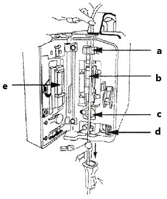
- a - 수액밸브의 잠기 기능
- b - 수액의 유속 측정
- c - 수액의 농도상태 파악
- e - 수액펌프의 잠금장치
(정답률: 61%)
65. 다음 중 혈액투석에 비해 복막투석의 최대 단점은?
- 치료시 마다 주사를 맞아야 한다.
- 매주 복말실에 와야 하는 불편함이 있다.
- 신체에 카테터를 삽입한 채로 다녀야 한다.
- 항상 기계에 의존하여야 하는 번거로움이 있다.
(정답률: 87%)
66. 환자감시장치에서 마취 환자의 자발호흡 상태 또는 환자의 환기상태를 평가할 수 있는 기능으로 옳은 것은?
- 심전도(ECG)
- 비관혈식혈압(NIBP)
- 혈중산소포화농도(SpO2)
- 호기말이산화탄소분압(EtCO2)
(정답률: 73%)
67. 인공호흡기는 인공적으로 호흡을 조절하여 페포에 산소를 불어넣는 장비이다. 이러한 인공호흡기가 필요한 경우가 아닌 것은?
- FiO2 ＜ 0.60
- PaCO2 ＞ 50mmHg
- pH ＞ 7.25
- PaO2 ＜ 50mmHg
(정답률: 74%)
68. 다음 중 심전도의 표준지 유도법 중 제 III 유도법으로 옳은 것은?
- 왼발(양극)-왼손(음극)
- 왼손(양극)-왼발(음극)
- 왼손(양극)-오른손(음극)
- 왼발(양극)-오른손(음극)
(정답률: 69%)
69. 다음 성질에서 출발하여 의료영상을 얻는 기기는?
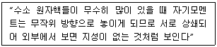
- CT
- MRI
- Ultra-Sonograph
- PET
(정답률: 78%)
70. 방사선은 파동형태의 방사선과 입자형태의 방사선으로 분류될 수 있다. 다음 중 파동형태의 방사선은?
- 알파선
- 중성자선
- 감마선
- 전자선
(정답률: 75%)
71. 다음 중 피부과 수술에서 널리 사용하는 것은?
- 레이저기기
- 간섭파치료기
- 고주파치료기
- 저주파치료기
(정답률: 83%)
72. 초음파 치료기기에서 이용되는 주파수의 범위는?
- 100Hz ~ 200Hz
- 1000Hz ~ 2000Hz
- 0.5Mhz ~ 5MHz
- 100MHz 이상
(정답률: 75%)
73. 다음 주 인큐베이터의 기능이 아닌 것은?
- 복사
- 대류
- 증발
- 확산
(정답률: 55%)
74. 다음 중 마취기 시스템의 구성요소가 아닌 것은?
- 증발기
- 통풍기
- 청소기 시스템
- 응축기
(정답률: 80%)
75. 자기공명영상시스템의 구성 요소 중 주자석(초전도전자석)의 자계 균일도를 높이기 위해 추가적으로 사용되는 코일은?
- Shimming coil
- Gradient coil
- RF coil
- Choke coil
(정답률: 73%)
76. 인공 페이스메이커(인공 심박조율기) 구성요소 중 심근에 고정되어 본체에서 전달된 전류를 심장에 전달하는 역할을 하는 것은?
- 전극선
- 고정핀
- 연결선
- 접속선
(정답률: 80%)
77. 다음 중 심박출량을 측정하기에 부적당한 방법은?
- 염광 광도법
- 온도 희석법
- 지시약 희석법
- 임피던스 측정법
(정답률: 59%)
78. 인체내에 고에너지를 갖는 충격파를 집중적으로 가해 체네 결석 등을 수술없이 치료할 수 있는 장비는?
- Ultrsound Scanner
- ESWL
- PDT
- MRI
(정답률: 84%)
79. X-선이 인체 조직을 통과하면서 조직의 물리적인 특성에 의해 X-선 감쇠 특성이 달라지는 특성을 이용해서 회전 주사와 선형주사로 영상을 재구성하는 의료영상기기는?
- X-선 촬영기
- CT 촬영기
- MRI 촬영기
- PET 촬영기
(정답률: 72%)
80. 다음 중 전기수술기의 용도가 아닌 것은?
- 절개
- 응고
- 지혈
- 냉각
(정답률: 88%)
5과목: 의용기계공학
81. 산화물계 세라믹인 지르코니아(ZrO2)의 특성으로 가장 옳지 않은 것은?
- 용융점이 낮다
- 화학적으로 안정적이다.
- 생체안정성이나 친화성을 가진다.
- 점차 강도가 저하되는 현상이 있다.
(정답률: 54%)
82. 다음 중 바이오 세라믹스의 특징을 설명으로 거리가 먼 것은?
- 성형, 가공성 우수
- 생체 친화성
- 일반적으로 높은 경도
- 낮은 파괴인성치
(정답률: 79%)
83. 다음 중 무한히 반복해서 응력을 가해도 파괴가 일어나지 않는 기계적 성질을 무엇이라 하는가?
- 피로한도
- 인장강도
- 취성파괴
- 탄성변형
(정답률: 80%)
84. 다음 중 인체관절에 미치는 영향에 따른 보조기의 종류가 아닌 것은?
- 보호용 보조기
- 보조용 보조기
- 증진용 보조기
- 교정용 보조기
(정답률: 80%)
85. 이온화 경향이 서로 다른 종류의 금속 생체재료를 접속시켜 제조한 임플란트에서 나타날 수 있는 분해 형태는 무엇인가?
- 틈새부식
- 이종금속부식
- 미생물에 의한 부식
- 화학적 침식
(정답률: 72%)
86. 다음 중 형상기억효과와 초탄성 효과를 동시에 가지고 있는 합금은?
- 폴리에틸렌(PE)
- 의료용 Co-Cr 합금
- NiTi 합금
- 탄탈럼(Ta) 합금
(정답률: 81%)
87. 다음 중 탄성이 좋고 질긴 특성을 가지고 있으며, 생체 적합성이 우수하여 인공 심장 재료로 활용되는 고분자 재료는?
- 실리콘
- 폴리우레탄
- 콜라겐
- 폴리에스터
(정답률: 62%)
88. 다음 중 3각 나사의 종류가 아닌 것은?
- 볼나사
- 미터나사
- 관용나사
- 유니파이나사
(정답률: 70%)
89. 다음 중 생체재료의 기계적 특성을 평가하는 방법이 아닌 것은?
- 마모시험(Wear test)
- 피로시험(Fatigue test)
- 경도시험(Hardness test)
- 접촉각시험(Contact angle test)
(정답률: 86%)
90. 다음 중 주파수 100[MHz]에서 도전율이 가장 낮은 조직은?
- 지방
- 골격근
- 간장
- 혈액
(정답률: 62%)
91. 다음 중 하지의지의 종류가 아닌 것은?
- 고관절의지
- 습관절의지
- 대퇴의지
- 견갑의지
(정답률: 86%)
92. 다음 중 나사의 유효지름이 d, 리드가 L, 리드각이 α 일 때 옳은 것은?
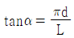
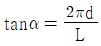
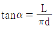
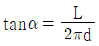
(정답률: 54%)
93. 다음 중 뼈의 구성 성분인 수산화인회석의 칼슘과 인의 비율(Ca/P)에 가장 가까운 수치는?
- 1.5
- 1.0
- 1.33
- 1.67
(정답률: 66%)
94. 모멘트 암의 길이가 10[cm]인 곳에 1[kgf]이 가해질 경우 모멘트는 몇 [N·m]인가?
- 0.98
- 1
- 10
- 9.8
(정답률: 62%)
95. 다음 중 나사의 리드(lead)에 대한 설명으로 옳은 것은?
- 나사를 1회전 돌렸을 때 축 방향으로 이동하는 원둘레이다.
- 나사를 1회전 돌렸을 때 축방향으로 이동하는 곡선길이이다.
- 나사를 1회전 돌렸을 때 축 방향으로 이동하는 각도이다.
- 나사를 1회전 돌렸을 때 축 방향으로 이동하는 거리이다.
(정답률: 72%)
96. 다음 중 임플란트나 생체 재료에 대한 특이적 기억(Specific memory)에 의하여 항원항체 반응이 병적으로 나타나는 과민반응(hyper sensitivity)을 무엇이라 하는가?
- 알레르기
- 방어반응
- 거부반응(rejection)
- 자가면역(autoimmunity) 반응
(정답률: 73%)
97. 다음 중 생체의 열적 특성에 대한 설명으로 옳지 않은 것은?
- 근육은 지방보다 열을 전달하기 쉽다.
- 열의 방산은 주로 호흡에 의해 일어난다.
- 유아의 체중 당 발열량은 성인에 비해 높다.
- 인체 조직 내의 열운반은 대부분 혈액의 순환에 의해 이루어진다.
(정답률: 76%)
98. 다음 생체조직이 나타내는 일반적인 물리적 특성으로 옳지 않은 것은?
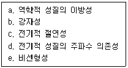
- a, b
- a, c
- b, d
- b, c
(정답률: 71%)
99. 다음 중 생체조직의 수동적인 전기 특성에 대한 설명으로 옳지 않은 것은?
- 주파수의 증가와 함께 도전율은 증가한다.
- 일반적으로 저주파 영역에서는 도전성이 지배적이다.
- 일반적으로 고주파 영역에서는 유전성이 지배적이다.
- 생체조직의 등가회로에서 세포막은 인덕터로 작용한다.
(정답률: 61%)
100. 다음 중 인체의 구조적 결함이나 기능이 상실 및 저하된 곳을 인위적인 기구나 장치를 통하여 기능회복, 직·간접적인 치류, 악화를 방지해주는 장치는?
- 의지
- 보조기
- 인공관절
- 스텐트
(정답률: 86%)
심장의 전기전도는 SA노드에서 시작되어 AV노드를 거쳐 히스번들을 통해 Purkinje섬유로 전달됩니다. SA노드는 심장의 자율신경계에 의해 발생하는 신호로 심장의 자율적인 수축을 조절합니다. AV노드는 심장의 상부에 위치하며, SA노드에서 발생한 신호를 일시적으로 지연시켜 심장의 상부와 하부의 수축을 조절합니다. 히스번들은 AV노드에서 발생한 신호를 전기적으로 전달하는 역할을 합니다. 마지막으로 Purkinje섬유는 심장의 하부에 위치하며, 심장의 강력한 수축을 유발합니다.